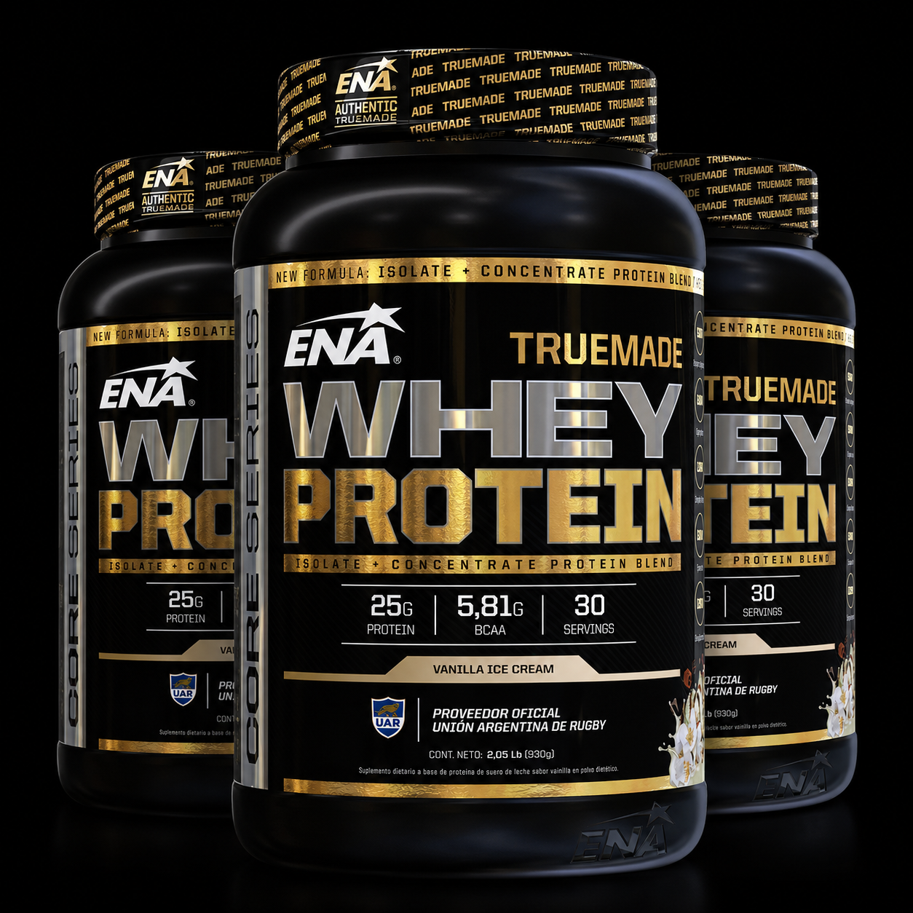

3 potes de 2 libras - Total: 90 Servicios. Blend de máxima pureza, rápida absorción y excelente calidad.Aporta los aminoácidos y micronutrientes que son clave en la alimentación de los deportistas. Favorece la recuperación y definición de la masa muscular, maximizando la fuerza y potencia en el entrenamiento. Aporta los nueve aminoácidos esenciales para una mejor definición muscular.
1 scoop (30 gramos) en 200 cc de agua o leche luego del ejercicio.
$165000